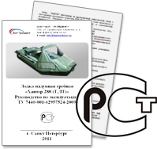

Гарантия
Уважаемый покупатель, компания ООО «ПТК Хантер» благодарит Вас за ваш выбор!
- В ходе эксплуатации надувной лодки «Хантер» старайтесь не допускать механических повреждений ткани ПВХ, воздействия на поверхность ткани кислот и сильнодействующих растворителей.
- Руководствуйтесь только паспортными данными при выборе подвесного лодочного мотора и не используйте лодку в режимах превышающих установленных производителем.
- При соблюдении всех рекомендаций, а так же бережном и внимательном отношении, надувные лодки «Хантер» прослужат Вам долгое время.
Перед началом эксплуатации надувной лодки «Хантер» рекомендуем Вам изучит паспорт изделия и проверить правильность заполнения данных о продаже.
Гарантия на лодку распространяется только в том случае, если в паспорте указана дата продажи и стоит печать продавца.
Гарантийные сроки:
60 месяцевсо дня продажи на материал ПВХ в случае образования естественных трещин, пористости и следов гниения.24 месяцевна клееные швы надувной лодки в случае их расклеивания или травления.12 месяцевна фурнитуру, включая клапана, уключины, фиксаторы весел, держатели банок, леерные и транспортировочные рамы — для всех моделей.6 месяцевна транспортировочные сумки, полы, реечный настил, весла, банки и помпы для всех моделей надувных лодок «Хантер».Гарантийное обслуживание
- Если обнаруженный дефект соответствует условиям гарантийных обязательств, то он будет устранён за счёт изготовителя, а если дефект был получен по вине покупателя, то ремонт будет произведен за его счет.
- В случае возникновения гарантийных обязательств доставка лодки от терминала транспортной компании в г.Санкт Петербург за счет производителя. Если случай признан не гарантийным транспортировка в сервис центр ООО «ПТК Хантер» осуществляется за счет покупателя.
- Лодка и её комплектующие сдаются на ремонт в чистом и просушенном виде. Рассмотрения гарантийного случая и гарантийный ремонт осуществляется в установленные законом сроки.
- При наступлении гарантийного случая - незамедлительно свяжитесь для консультации с продавцом Вашей лодки. Отправка лодки на гарантийный ремонт осуществляется строго через уполномоченного продавца.
Гарантия не распостраняется в случаях:
- Нарушения инструкции по уходу и эксплуатации.
- Несчастного случая или аварии.
- Использовании не оригинальных деталей и аксессуаров.
- Вследствие самостоятельного ремонта или ремонт неспециализированным сервисом.
- Механических повреждений, возникших в процессе эксплуатации надувной лодки или ее компонентов
- Если изделие хранилось, было собрано или установлено неправильно, использовалось с нарушением норм эксплуатации или не по назначению
- Гарантия не распространяется на случайные повреждения, связанные со спуском лодки на воду, буксировкой, хранением и транспортировкой.
- Гарантия не распространяется на естественный износ изделий и старение материала.
Обмен и возврат товара
При возникновении гарантийного случая обмен лодки на новую производится только при соблюдении следующих условий:
- Лодка не была на воде
- Лодка и комплектующие не имеют никаких механических повреждений
- Комплектация лодки соответствует паспорту изделия
- Лодка имеет не устранимый дефект
Во всех остальных случаях осуществляется гарантийный ремонт.
При наступлении гарантийного случая Вы всегда можете обратиться к нам за помощью, квалифицированные менеджеры нашей компании всегда проконсультируют Вас.
пн-пт 9:00-18:00 +7 (812) 654-32-55